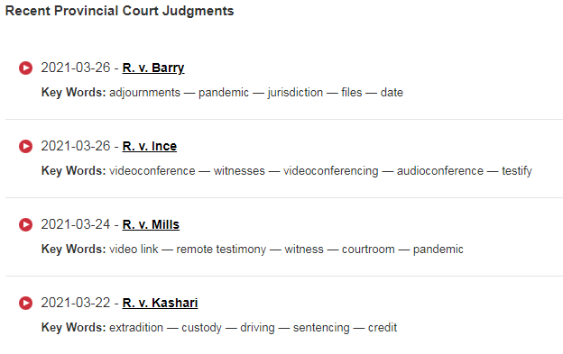

Yannick Bandaogo Case - Steps to Obtain Justification for the Publication Ban
April 3rd, 2021
Yesterday I detailed my steps up to Yannick Bandaogo's first court appearance for his stabbing of 7 presumably White People in North Vancouver. At the end I called once more the North Vancouver Court Registry to
So my options after calling the North Vancouver Court Registry were as follows.
1. Contact the crown directly. This is by far the most obviously productive course of action, however they will be closed for Good Friday, so I can't contact them until April 5th at the earliest.
2. Go look on the provincial court website, for any press releases, or published judgements. In fact I have already done so, and can tell you that there is nothing there of relevance.
Recent Provincial Court Decisions. Notice, nothing since the stabbing on March 28th.
3. Get the transcript. Either get the transcript directly through JC Word Assist, or get a CD of the audio from the court itself. Weirdly, the CD would be free, while the transcript costs money depending on the page length, and other details. Additionally, the transcript needs to be delivered physically (why?) so it's not any faster than simply waiting until monday to contact the crown.
4. Application to the judge, in this case for a lift on the publication ban. After looking at the application, I definitely will be filling this out, if only to get them on record denying this to me. However, for maximum effect, I need more factual details on this case.
So to make a long story short, not much will happen until Monday, April 5th. In the meantime, I can write more articles on Yannick Bandaogo himself. He apparently was arrested and put in jail in Winnipeg for threatening two city workers with a knife. Were those workers White? Something tells me yes.
Remember, my goal here is to get the crown/RCMP to admit that the reason they are interfering in the investigation here is purely for anti-White political reasons.
For reference, here is the form for the Application to the Judge. I might need some help filling this stuff out.